import numpy as np
import matplotlib.pyplot as plt
from scipy.integrate import solve_ivp
from scipy.signal import find_peaks
from mpl_toolkits.mplot3d import Axes3DExploración numérica de sistemas dinámicos
sistemas dinámicos
caos
Python
Lotka-Volterra, péndulo simple y sistema de Lorenz resueltos con RK45: campos de direcciones, espacio de fases, series temporales y sensibilidad a las condiciones iniciales.
1. Lotka-Volterra: interacción depredador-presa
Tebemos el sistema:
\[ \begin{cases} \dfrac{dx}{dt} = \alpha x - \beta xy, \\[6pt] \dfrac{dy}{dt} = \delta xy - \gamma y, \end{cases} \qquad x(0) = x_0, \quad y(0) = y_0, \]
donde \(x(t)\) son las presas y \(y(t)\) los depredadores. Como parámetros de referencia tomamos
\[\alpha = 1.0, \quad \beta = 0.5, \quad \gamma = 0.75, \quad \delta = 0.25 .\]
alpha, beta, gamma, delta = 1.0, 0.5, 0.75, 0.25
def f(t, u):
x, y = u
return np.array([alpha*x - beta*x*y,
delta*x*y - gamma*y])Actividad 1.
Dibujo el campo en la malla \([0, 10] \times [0, 6]\) con 25 puntos por lado. Además del campo agrego las dos rectas donde alguna derivada se anula : \(dx/dt = 0\) sobre \(y = \alpha/\beta = 2\) y \(dy/dt = 0\) sobre \(x = \gamma/\delta = 3\).
xmax, ymax = 10, 6
X, Y = np.meshgrid(np.linspace(0, xmax, 25),
np.linspace(0, ymax, 25))
F, G = alpha*X - beta*X*Y, delta*X*Y - gamma*Y
norma = np.hypot(F, G)
plt.figure(figsize=(9, 6))
plt.quiver(X, Y, F/np.where(norma > 0, norma, 1),
G/np.where(norma > 0, norma, 1),
angles="xy", color="gray")
plt.axhline(alpha/beta, color="tab:blue", linestyle="--", label=r"$dx/dt = 0$ ($y = \alpha/\beta$)")
plt.axvline(gamma/delta, color="tab:orange", linestyle="--", label=r"$dy/dt = 0$ ($x = \gamma/\delta$)")
plt.plot(gamma/delta, alpha/beta, "ko", label="equilibrio $(3, 2)$")
plt.xlabel(r"$x$ (presas)", fontsize=14)
plt.ylabel(r"$y$ (depredadores)", fontsize=14)
plt.title("Campo de direcciones, Lotka-Volterra")
plt.xlim(0, xmax)
plt.ylim(0, ymax)
plt.legend(loc="upper right")
plt.grid()
plt.show()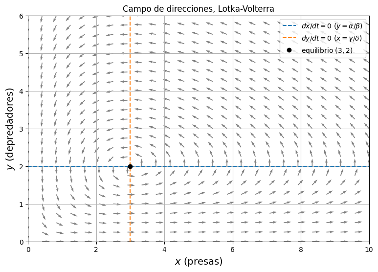
Las flechas indican la dirección. Como \(dx/dt = x(\alpha - \beta y)\), las presas crecen cuando \(y < \alpha/\beta = 2\) y decrecen cuando hay más de dos depredadores; análogamente \(dy/dt = y(\delta x - \gamma)\): los depredadores crecen si \(x > \gamma/\delta = 3\) y decrecen si hay menos de tres presas. También, abajo a la derecha (muchas presas, pocos depredadores) las flechas apuntan hacia arriba y a la derecha, lo qe indica que crecen amabas poblaciones; arriba a la derecha crecen los depredadores pero las presas ya van en descenso; arriba a la izquierda decrecen las dos y abajo a la izquierda sólo crecen las presas. Si se eecorren las regiones en ese orden se ve que el campo gira en sentido antihorario alrededor del equilibrio \((3, 2)\). Sobre los ejes el campo es tangente al eje: si \(y = 0\) las presas crecen sin control y si \(x = 0\) los depredadores mueren.
Actividad 2.
Configuración: \(\alpha = 1.0\), \(\beta = 0.5\), \(\gamma = 0.75\), \(\delta = 0.25\); intervalo \(t \in [0, 30]\) con 3000 puntos guardados. Condiciones iniciales:
\((x_0, y_0) = (2, 2)\), \((5, 1)\) y \((8, 1)\).
T = 30.0
tiempos = np.linspace(0, T, 3000)
condiciones = [[2, 2], [5, 1], [8, 1]]
soluciones = []
for u0 in condiciones:
sol = solve_ivp(f, (0, T), u0, method="RK45",
t_eval=tiempos, rtol=1e-8, atol=1e-10)
soluciones.append(sol.y.T)
t = sol.t
# presas contra tiempo
plt.figure(figsize=(10, 4))
for u0, U in zip(condiciones, soluciones):
plt.plot(t, U[:, 0], label=f"$x_0={u0[0]},\\ y_0={u0[1]}$")
plt.xlabel(r"$t$", fontsize=14)
plt.ylabel(r"$x$ (presas)", fontsize=14)
plt.title("Presas contra tiempo")
plt.legend()
plt.grid()
plt.show()
# depredadores contra tiempo
plt.figure(figsize=(10, 4))
for u0, U in zip(condiciones, soluciones):
plt.plot(t, U[:, 1], label=f"$x_0={u0[0]},\\ y_0={u0[1]}$")
plt.xlabel(r"$t$", fontsize=14)
plt.ylabel(r"$y$ (depredadores)", fontsize=14)
plt.title("Depredadores contra tiempo")
plt.legend()
plt.grid()
plt.show()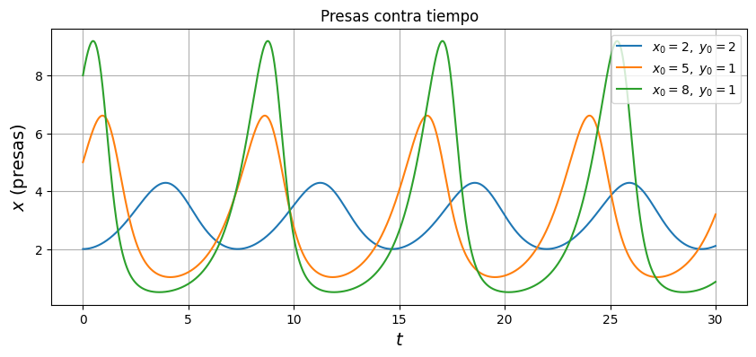
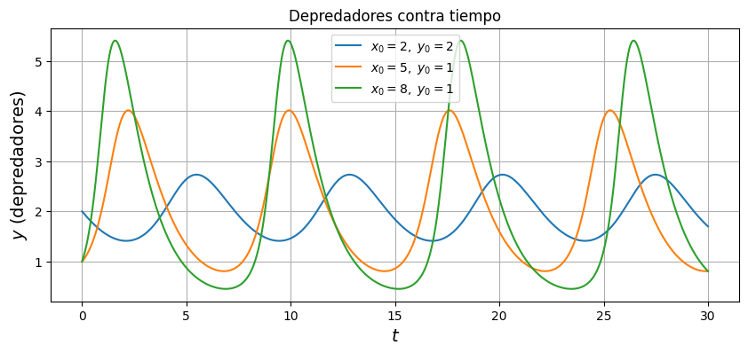
# trayectorias en el espacio de fases sobre el campo de direcciones
plt.figure(figsize=(9, 6))
plt.quiver(X, Y, F/np.where(norma > 0, norma, 1),
G/np.where(norma > 0, norma, 1),
angles="xy", color="lightgray")
for u0, U in zip(condiciones, soluciones):
plt.plot(U[:, 0], U[:, 1], label=f"$x_0={u0[0]},\\ y_0={u0[1]}$")
plt.plot(u0[0], u0[1], "ko", markersize=4)
plt.plot(gamma/delta, alpha/beta, "r*", markersize=10, label="equilibrio")
plt.xlabel(r"$x$ (presas)", fontsize=14)
plt.ylabel(r"$y$ (depredadores)", fontsize=14)
plt.title("Espacio de fases, Lotka-Volterra")
plt.xlim(0, xmax)
plt.ylim(0, ymax)
plt.legend()
plt.grid()
plt.show()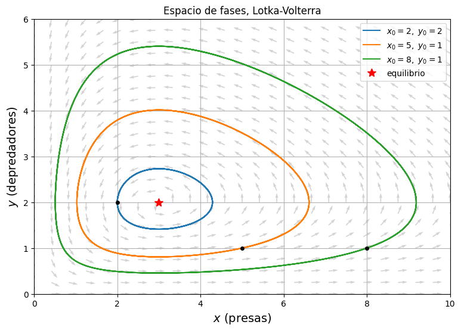
Asimismo, para ver el desfase entre las dos poblaciones podemos dibujar \(x(t)\) y \(y(t)\) en la misma gráfica. Tomamos el caso \((x_0, y_0) = (8, 1)\) y medimos con find_peaks el instante en que ocurre el primer máximo de cada población y cuánto dura un ciclo.
U = soluciones[2]
plt.figure(figsize=(10, 4))
plt.plot(t, U[:, 0], label="Presas")
plt.plot(t, U[:, 1], label="Depredadores")
plt.xlabel(r"$t$", fontsize=14)
plt.ylabel("población", fontsize=14)
plt.title(r"Lotka-Volterra con $(x_0, y_0) = (8, 1)$")
plt.legend()
plt.grid()
plt.show()
picos_x, _ = find_peaks(U[:, 0])
picos_y, _ = find_peaks(U[:, 1])
print("primer máximo de presas en t =", round(t[picos_x[0]], 2), " x =", round(U[picos_x[0], 0], 2))
print("primer máximo de depredadores en t =", round(t[picos_y[0]], 2), " y =", round(U[picos_y[0], 1], 2))
print("desfase entre máximos:", round(t[picos_y[0]] - t[picos_x[0]], 2))
print("periodo aproximado:", round(t[picos_x[1]] - t[picos_x[0]], 2))
print("mínimo de presas:", round(U[:, 0].min(), 3), " mínimo de depredadores:", round(U[:, 1].min(), 3))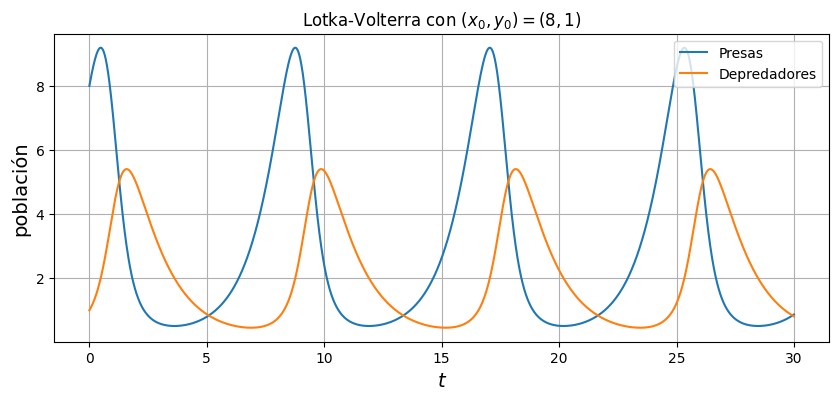
primer máximo de presas en t = 0.48 x = 9.19
primer máximo de depredadores en t = 1.58 y = 5.4
desfase entre máximos: 1.1
periodo aproximado: 8.28
mínimo de presas: 0.509 mínimo de depredadores: 0.455Aquí se mantuvieron fijos los cuatro parámetros y sólo se cambió el punto de partida. Las tres soluciones son periódicas y en el espacio de fases se ven como curvas cerradas alrededor del equilibrio \((3, 2)\). Entre más lejos del equilibrio empieza la trayectoria, más grande es la órbita y más extremas las oscilaciones: partiendo de \((2, 2)\) las presas se mueven entre 2 y poco más de 4, mientras que partiendo de \((8, 1)\) llegan a 9.19 y bajan hasta 0.51. Es de destacar que el periodo también cambia con la amplitud (las curvas de \(x\) vs \(t\) no van en fase entre sí aunque tengan los mismos parámetros), lo que no pasaría en un oscilador lineal. En la gráfica con las dos poblaciones juntas el primer máximo de presas ocurre en \(t = 0.48\) y el de depredadores en \(t = 1.58\), es decir, los depredadores van retrasados 1.1 unidades de tiempo respecto a las presas, y ese retraso se repite en cada ciclo. El mínimo de presas (0.51) y el de depredadores (0.46) también están desfasados, ya que primero se desploman las presas y después los depredadores.
Actividad 3.
Condición inicial fija \((x_0, y_0) = (5, 1)\), \(t \in [0, 30]\). Caso de referencia: \(\alpha = 1.0\), \(\beta = 0.5\), \(\gamma = 0.75\), \(\delta = 0.25\) y en cada experimento se duplica un sólo parámetro:
\(\alpha: 1.0 \to 2.0\), \(\quad \beta: 0.5 \to 1.0\), \(\quad \gamma: 0.75 \to 1.5\), \(\quad \delta: 0.25 \to 0.5\).
Escribimos la misma \(f\) pero recibiendo los parámetros como argumento.
u0 = [5, 1]
referencia = {"alpha": 1.0, "beta": 0.5, "gamma": 0.75, "delta": 0.25}
cambios = {"alpha": 2.0, "beta": 1.0, "gamma": 1.5, "delta": 0.5}
def resolver_lv(p):
def f_p(t, u):
x, y = u
return np.array([p["alpha"]*x - p["beta"]*x*y,
p["delta"]*x*y - p["gamma"]*y])
sol = solve_ivp(f_p, (0, T), u0, method="RK45",
t_eval=tiempos, rtol=1e-8, atol=1e-10)
return sol.y.T
U_ref = resolver_lv(referencia)
resultados = {}
for nombre, valor in cambios.items():
p = dict(referencia)
p[nombre] = valor
resultados[nombre] = resolver_lv(p)
for nombre, U_mod in resultados.items():
plt.figure(figsize=(10, 4))
plt.plot(t, U_ref[:, 0], "tab:blue", label="Presas (referencia)")
plt.plot(t, U_ref[:, 1], "tab:orange", label="Depredadores (referencia)")
plt.plot(t, U_mod[:, 0], "tab:blue", linestyle="--", label=f"Presas ({nombre} = {cambios[nombre]})")
plt.plot(t, U_mod[:, 1], "tab:orange", linestyle="--", label=f"Depredadores ({nombre} = {cambios[nombre]})")
plt.xlabel(r"$t$", fontsize=14)
plt.ylabel("población", fontsize=14)
plt.title(f"Referencia contra {nombre} = {referencia[nombre]} $\\to$ {cambios[nombre]}")
plt.legend(loc="upper right", fontsize=9)
plt.grid()
plt.show()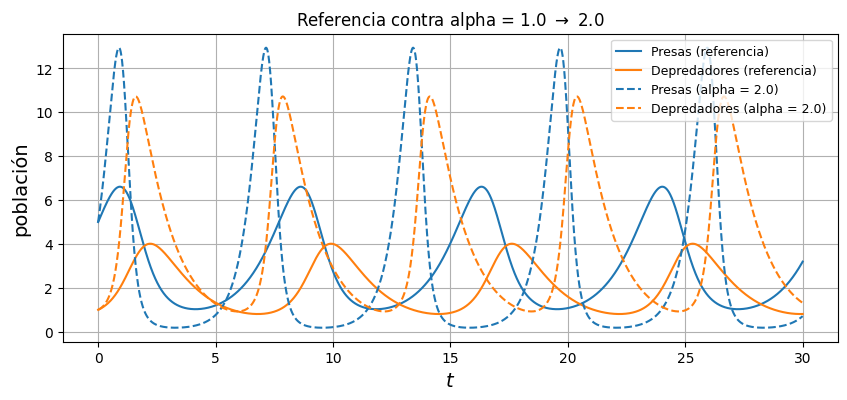
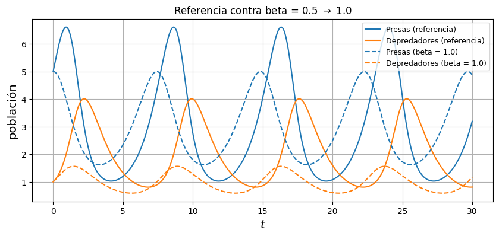
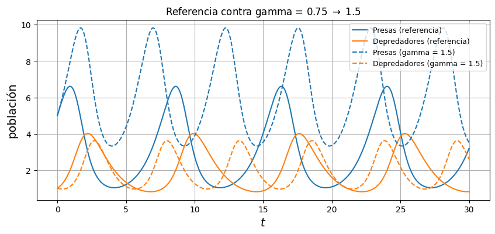
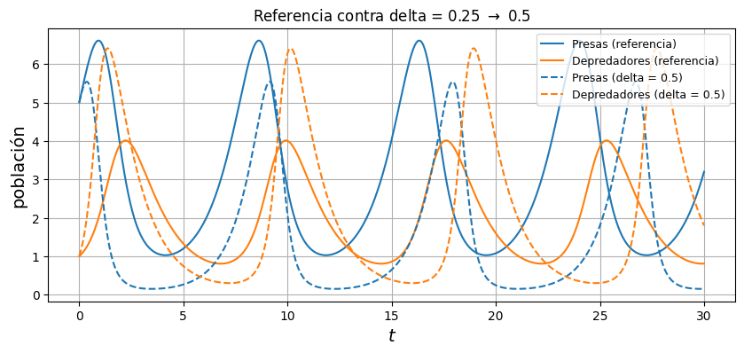
plt.figure(figsize=(9, 6))
plt.plot(U_ref[:, 0], U_ref[:, 1], "k", linewidth=2, label="referencia")
for nombre, U_mod in resultados.items():
plt.plot(U_mod[:, 0], U_mod[:, 1], label=f"{nombre} = {cambios[nombre]}")
p = dict(referencia); p[nombre] = cambios[nombre]
plt.plot(p["gamma"]/p["delta"], p["alpha"]/p["beta"], "o", color=plt.gca().lines[-1].get_color())
plt.plot(referencia["gamma"]/referencia["delta"], referencia["alpha"]/referencia["beta"], "ko")
plt.plot(u0[0], u0[1], "ks", markersize=6, label="condición inicial (5, 1)")
plt.xlabel(r"$x$ (presas)", fontsize=14)
plt.ylabel(r"$y$ (depredadores)", fontsize=14)
plt.title("Espacio de fases al cambiar un parámetro (los puntos son los equilibrios)")
plt.legend(loc="upper left", bbox_to_anchor=(1.01, 1))
plt.grid()
plt.show()
for nombre in cambios:
picos, _ = find_peaks(resultados[nombre][:, 0])
print(f"{nombre} = {cambios[nombre]}: periodo ~ {t[picos[1]] - t[picos[0]]:.2f}, máx presas = {resultados[nombre][:, 0].max():.2f}, máx depredadores = {resultados[nombre][:, 1].max():.2f}")
picos, _ = find_peaks(U_ref[:, 0])
print(f"referencia: periodo ~ {t[picos[1]] - t[picos[0]]:.2f}, máx presas = {U_ref[:, 0].max():.2f}, máx depredadores = {U_ref[:, 1].max():.2f}")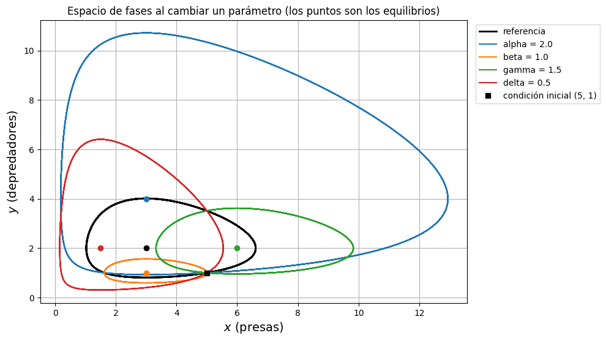
alpha = 2.0: periodo ~ 6.26, máx presas = 12.94, máx depredadores = 10.72
beta = 1.0: periodo ~ 7.42, máx presas = 5.00, máx depredadores = 1.56
gamma = 1.5: periodo ~ 5.29, máx presas = 9.83, máx depredadores = 3.62
delta = 0.5: periodo ~ 8.78, máx presas = 5.54, máx depredadores = 6.41
referencia: periodo ~ 7.69, máx presas = 6.61, máx depredadores = 4.01Aquí la condición inicial es siempre \((5, 1)\) y sólo se duplica un parámetro por experimento. En el espacio de fases lo primero que se nota es que cada cambio mueve el punto de equilibrio, porque \(x^* = \gamma/\delta\) y \(y^* = \alpha/\beta\): duplicar \(\alpha\) sube el equilibrio a \((3, 4)\), duplicar \(\beta\) lo baja a \((3, 1)\), duplicar \(\gamma\) lo corre a \((6, 2)\) y dullicar \(\delta\) lo acerca al origen, a \((1.5, 2)\). Como la condición inicial es la misma, la órbita queda más o menos grande dependiendo de qué tan lejos está \((5, 1)\) del nuevo equilibrio. En suma, ningún cambio destruye el carácter cíclico del modelo: siempre hay órbitas cerradas, sólo cambian su centro, su tamaño y su duración.
Actividad 4
En general, las presas aumentan mientras \(y < \alpha/\beta\) y los depredadores aumentan mientras \(x > \gamma/\delta\). Ninguna población decide por sí sola su destino, el signo de \(dx/dt\) depende del número de depredadores y el de \(dy/dt\) del número de presas.
Si empezamos con muchas presas y pocos depredadores, como en \((8, 1)\), la secuencia que se observa es la siguiente: Con \(y = 1 < 2\) las presas todavía crecen un poco (llegan a 9.19 en \(t = 0.48\)) pero como \(x > 3\) los depredadores crecen con rapidez; en cuanto pasan de 2, las presas empiezan a caer. Los depredadores siguen subiendo mientras haya más de 3 presas y tocan su máximo (5.4) en \(t = 1.58\), cuando las presas cruzan hacia abajo la recta \(x = 3\). A partir de ahí las dos poblaciones caen, las presas hasta 0.51 y despues los depredadores (que sin alimento se desploman en 0.46). Así, con pocos depredadores las presas se recuperan, y cuando de nuevo rebasan 3 presas el ciclo comienza de nuevo
Los máximos no ocurren al mismo tiempo, hay un desfase de 1.1 unidades de tiempo con los depredadores siempre atrás; esto se debe a que el máximo de presas ocurre exactamente cuando \(dx/dt = 0\), o sea cuando \(y = \alpha/\beta\), y en ese momento hay bastantes presas (\(x > \gamma/\delta\)) así que \(dy/dt > 0\) y los depredadores siguen creciendo. El máximo de depredadores llega cuando las presas ya cayeron hasta \(x = \gamma/\delta\). Los depredadores responden a la cantidad de presas que hubo en lugar de a la que hay.
Recorriendo la órbita verde (de \((8, 1)\)) en el sentido del tiempo: sale del punto \((8, 1)\) hacia arriba y a la derecha (crecen las dos especies), en el punto más a la derecha, \(x \approx 9.2\), cruza la recta \(y = 2\) y empieza a ir a la izquierda mientras sigue subiendo (las presas bajan y los depredadores suben); en el punto más alto, \(y \approx 5.4\), cruza la recta \(x = 3\) y desde ahí va hacia abajo y a la izquierda (caen las dos); en el extremo izquierdo, \(x \approx 0.5\), vuelve a cruzar \(y = 2\) y baja hacia la derecha (las presas suben y los depredadores siguen cayendo), hasta que en e punto más bajo, \(y \approx 0.46\), cruza otra vez \(x = 3\) y cierra el ciclo. Cada uno de esos cuatro tramos corresponde a un cuarto de ciclo de las gráficas temporales: el punto más a la derecha de la órbita es el pico de la curva de presas, el más alto es el pico de la curva de depredadores, y así sucesivamente. Las dos representaciones son esencialmente la misma información, sólo que en la temporal se ve cuándo pasa cada cosa y en el espacio de fases se ve la forma geométrica del ciclo.
2. Péndulo simple
La ecuación \(\ddot\theta + \frac{g}{\ell}\sin\theta = 0\) es el sistema de primer orden
\[ \begin{cases} \dfrac{d\theta}{dt} = \omega, \\[6pt] \dfrac{d\omega}{dt} = -\dfrac{g}{\ell}\sin\theta, \end{cases} \qquad \theta(0) = \theta_0, \quad \omega(0) = \omega_0 . \]
Usamos \(g = 9.81\) y como longitud de referencia \(\ell = 1\) con estos valores \(\sqrt{g/\ell} \approx 3.13\), así que el periodo de las oscilaciones pequeñas debería ser \(2\pi\sqrt{\ell/g} \approx 2.006\).
g = 9.81
ell = 1.0
def f(t, u):
theta, omega = u
return np.array([omega, -(g/ell)*np.sin(theta)])Actividad 1
Malla \(\theta \in [-2\pi, 2\pi]\), \(\omega \in [-8, 8]\), 25 puntos por lado, de modo que aparezcan los equilibrios \(\theta = 0, \pm\pi, \pm 2\pi\). Se dibuja también la separatriz \(\omega = \pm 2\sqrt{g/\ell}\,\cos(\theta/2)\).
Theta, Omega = np.meshgrid(np.linspace(-2*np.pi, 2*np.pi, 25),
np.linspace(-8, 8, 25))
F = Omega
G = -(g/ell)*np.sin(Theta)
norma = np.hypot(F, G)
th = np.linspace(-2*np.pi, 2*np.pi, 400)
separatriz = 2*np.sqrt(g/ell)*np.cos(th/2)
plt.figure(figsize=(11, 6))
plt.quiver(Theta, Omega, F/np.where(norma > 0, norma, 1),
G/np.where(norma > 0, norma, 1),
angles="xy", color="gray")
plt.plot(th, separatriz, "r--", linewidth=1, label="separatriz")
plt.plot(th, -separatriz, "r--", linewidth=1)
plt.plot([-2*np.pi, 0, 2*np.pi], [0, 0, 0], "ko", label=r"equilibrio estable ($\theta = 2k\pi$)")
plt.plot([-np.pi, np.pi], [0, 0], "ko", markerfacecolor="white", label=r"equilibrio inestable ($\theta = (2k+1)\pi$)")
plt.xticks([-2*np.pi, -np.pi, 0, np.pi, 2*np.pi], [r"$-2\pi$", r"$-\pi$", "0", r"$\pi$", r"$2\pi$"])
plt.xlabel(r"$\theta$", fontsize=14)
plt.ylabel(r"$\omega$", fontsize=14)
plt.title("Campo de direcciones del péndulo simple")
plt.legend(loc="upper right")
plt.grid()
plt.show()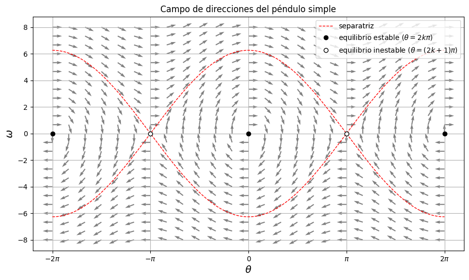
El campo del péndulo es periódico en \(\theta\) con periodo \(2\pi\), por eso lo que se ve alrededor de \(\theta = 0\) se repite en \(\pm 2\pi\). Como \(d\theta/dt = \omega\), en la mitad superior del plano (\(\omega > 0\)) todas las flechas apuntan a la derecha y en la inferior a la izquierda; la componente vertical, \(-(g/\ell)\sin\theta\), es la que cambia de signo con la posición. Físicamente, \(\theta = \pi\) es el péndulo parado de cabeza, y la línea roja con putns que sale y entra es la frontera entre las dos clases de movimiento: adentro de ella el péndulo oscila, afuera da vueltas completas. Sobre el eje \(\omega = 0\) el campo es vertical.
Actividad 2
Configuración: \(g = 9.81\), \(\ell = 1\), \(t \in [0, 30]\) con 3000 puntos (para las gráficas temporales se muestan sólo los primeros 10 segundos). Condiciones iniciales \((\theta_0, \omega_0)\):
- \((0.3, 0)\): oscilación pequeña,
- \((2.5, 0)\): oscilación grande,
- \((\pi - 0.05, 0)\): se suelta casi desde la posición superior,
- \((0, 5)\): se empuja desde abajo con energía insuficiente para dar la vuelta (\(5 < 2\sqrt{g/\ell} \approx 6.26\)),
- \((0, 7)\): se empuja con energía suficiente, da vueltas completas.
T = 30.0
tiempos = np.linspace(0, T, 3000)
condiciones = [[0.3, 0.0], [2.5, 0.0], [np.pi - 0.05, 0.0], [0.0, 5.0], [0.0, 7.0]]
etiquetas = [r"$\theta_0=0.3,\ \omega_0=0$", r"$\theta_0=2.5,\ \omega_0=0$",
r"$\theta_0=\pi-0.05,\ \omega_0=0$", r"$\theta_0=0,\ \omega_0=5$", r"$\theta_0=0,\ \omega_0=7$"]
soluciones = []
for u0 in condiciones:
sol = solve_ivp(f, (0, T), u0, method="RK45",
t_eval=tiempos, rtol=1e-8, atol=1e-10)
soluciones.append(sol.y.T)
t = sol.t
ventana = t <= 10
plt.figure(figsize=(11, 4))
for et, U in zip(etiquetas, soluciones):
plt.plot(t[ventana], U[ventana, 0], label=et)
plt.xlabel(r"$t$", fontsize=14)
plt.ylabel(r"$\theta$", fontsize=14)
plt.title("Ángulo contra tiempo")
plt.legend(loc="upper left", fontsize=9)
plt.grid()
plt.show()
plt.figure(figsize=(11, 4))
for et, U in zip(etiquetas, soluciones):
plt.plot(t[ventana], U[ventana, 1], label=et)
plt.xlabel(r"$t$", fontsize=14)
plt.ylabel(r"$\omega$", fontsize=14)
plt.title("Velocidad angular contra tiempo")
plt.legend(loc="upper right", fontsize=9)
plt.grid()
plt.show()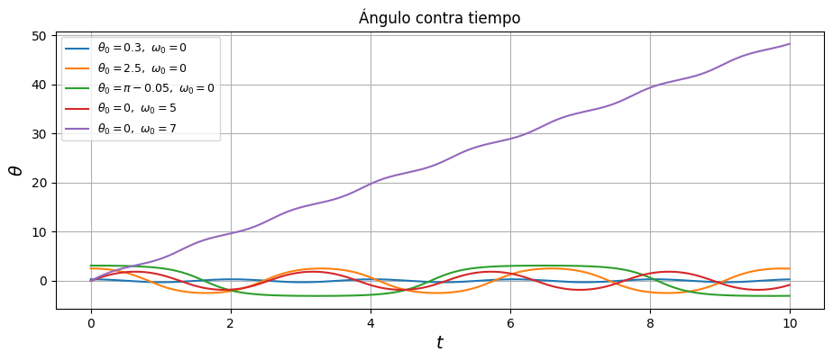
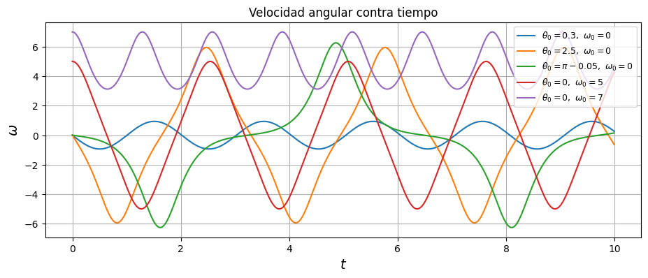
plt.figure(figsize=(11, 6))
plt.quiver(Theta, Omega, F/np.where(norma > 0, norma, 1),
G/np.where(norma > 0, norma, 1),
angles="xy", color="lightgray")
plt.plot(th, separatriz, "r--", linewidth=1, label="separatriz")
plt.plot(th, -separatriz, "r--", linewidth=1)
for et, U in zip(etiquetas, soluciones):
plt.plot(U[:, 0], U[:, 1], label=et)
plt.xticks([-2*np.pi, -np.pi, 0, np.pi, 2*np.pi], [r"$-2\pi$", r"$-\pi$", "0", r"$\pi$", r"$2\pi$"])
plt.xlim(-2*np.pi, 2*np.pi)
plt.ylim(-8, 8)
plt.xlabel(r"$\theta$", fontsize=14)
plt.ylabel(r"$\omega$", fontsize=14)
plt.title("Espacio de fases del péndulo")
plt.legend(loc="upper right", fontsize=9)
plt.grid()
plt.show()
for et, U in zip(etiquetas[:4], soluciones[:4]):
picos, _ = find_peaks(U[:, 0])
print(f"{et}: periodo ~ {t[picos[1]] - t[picos[0]]:.3f}, |theta| máx = {abs(U[:, 0]).max():.3f}")
print("periodo de oscilaciones pequeñas, 2*pi*sqrt(l/g) =", round(2*np.pi*np.sqrt(ell/g), 3))
print("theta final del caso con omega_0 = 7:", round(soluciones[4][-1, 0], 1), "rad, es decir", round(soluciones[4][-1, 0]/(2*np.pi), 1), "vueltas")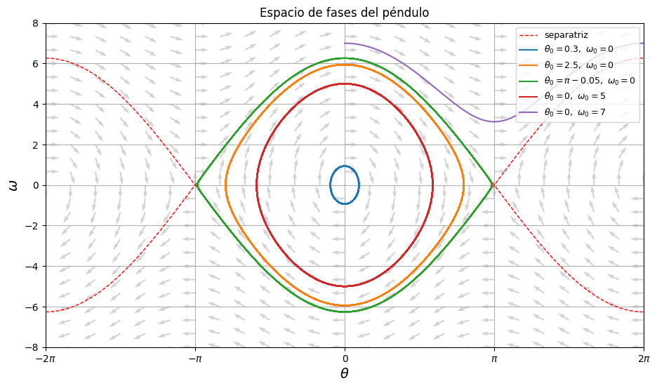
$\theta_0=0.3,\ \omega_0=0$: periodo ~ 2.011, |theta| máx = 0.300
$\theta_0=2.5,\ \omega_0=0$: periodo ~ 3.301, |theta| máx = 2.500
$\theta_0=\pi-0.05,\ \omega_0=0$: periodo ~ 6.482, |theta| máx = 3.092
$\theta_0=0,\ \omega_0=5$: periodo ~ 2.541, |theta| máx = 1.849
periodo de oscilaciones pequeñas, 2*pi*sqrt(l/g) = 2.006
theta final del caso con omega_0 = 7: 146.4 rad, es decir 23.3 vueltasAquí, se fijó \(g = 9.81\), \(\ell = 1\) y varió el punto de partida. Los cuatro primeros casos oscilan y el último rota, y la diferencia se ve en las dos representaciones: en las gráficas temporales las oscilaciones tienen \(\theta\) acotado y periódico, alternando de signo, mientras que en el caso \(\omega_0 = 7\) el ángulo crece de manera monótona (casi lineal) con pequeñas ondulaciones (llega a 146.4 rad, unas 23 vueltas, en 30 segundos) y \(\omega\) nunca cambia de signo, sólo oscila. El caso \(\pi - 0.05\) es interesante: en la gráfica de \(\theta\) contra \(t\) se ve que el péndulo se queda varado cerca de la posición superior un buen rato, cae rápidamente, pasa por abajo a alta velocidad (\(|\omega| \approx 6.2\)), sube casi hasta \(-\pi\) y vuelve a quedarse quieto ahí; su órbita en el espacio de fases está pegada a la separatriz por dentro.
Actividad 3
Condición inicial fija \((\theta_0, \omega_0) = (1, 0)\), \(g = 9.81\), \(t \in [0, 30]\) (sólo primeros 10 segundos). Caso de referencia \(\ell = 1\) comparándolo con \(\ell = 0.5\) y \(\ell = 2\).
g = 9.81
T = 30.0
tiempos = np.linspace(0, T, 3001)
t = tiempos
ventana = t <= 10
def f(t, u, ell=1.0):
theta, omega = u
return [omega, -(g / ell) * np.sin(theta)]
u0 = [1.0, 0.0]
longitudes = [0.5, 1.0, 2.0]
soluciones_l = []
for ell in longitudes:
sol = solve_ivp(f, (0, T), u0, method="RK45", t_eval=tiempos,
args=(ell,), rtol=1e-8, atol=1e-10)
soluciones_l.append(sol.y.T)
plt.figure(figsize=(11, 4))
for l, U in zip(longitudes, soluciones_l):
plt.plot(t[ventana], U[ventana, 0], label=fr"$\ell = {l}$")
plt.xlabel(r"$t$", fontsize=14)
plt.ylabel(r"$\theta$", fontsize=14)
plt.title(r"Ángulo contra tiempo para distintas longitudes, $(\theta_0, \omega_0) = (1, 0)$")
plt.legend()
plt.grid()
plt.show()
plt.figure(figsize=(8, 6))
for l, U in zip(longitudes, soluciones_l):
plt.plot(U[:, 0], U[:, 1], label=fr"$\ell = {l}$")
plt.xlabel(r"$\theta$", fontsize=14)
plt.ylabel(r"$\omega$", fontsize=14)
plt.title("Espacio de fases para distintas longitudes")
plt.legend()
plt.grid()
plt.show()
for l, U in zip(longitudes, soluciones_l):
picos, _ = find_peaks(U[:, 0])
print(f"l = {l}: periodo medido = {t[picos[1]] - t[picos[0]]:.3f}, "
f"2*pi*sqrt(l/g) = {2*np.pi*np.sqrt(l/g):.3f}, "
f"|omega| máx = {np.abs(U[:, 1]).max():.3f}")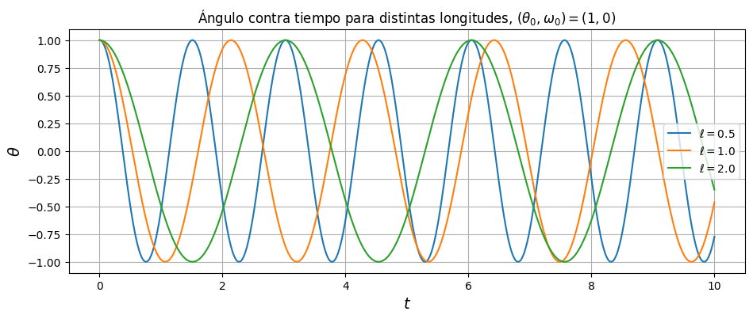
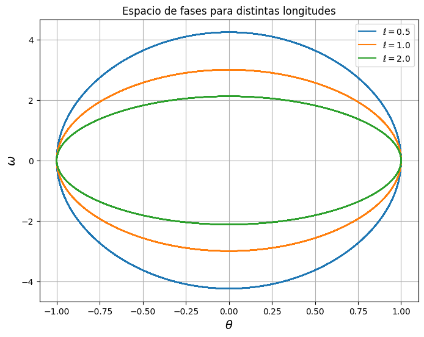
l = 0.5: periodo medido = 1.520, 2*pi*sqrt(l/g) = 1.419, |omega| máx = 4.247
l = 1.0: periodo medido = 2.140, 2*pi*sqrt(l/g) = 2.006, |omega| máx = 3.003
l = 2.0: periodo medido = 3.020, 2*pi*sqrt(l/g) = 2.837, |omega| máx = 2.124Aquí lo único que cambia es la longitud, con la misma condición inicial \((\theta_0, \omega_0) = (1, 0)\). Al acortar el péndulo oscila más rápido y al alargarlo más despacio: los periodos medidos fueron 1.520, 2.140 y 3.020 para \(\ell = 0.5, 1, 2\). Los cocientes entre ellos son \(1.520/2.140 = 0.710\) y \(3.020/2.140 = 1.411\), prácticamente \(1/\sqrt{2}\) y \(\sqrt{2}\), así que el periodo escala como \(\sqrt{\ell}\) tal como dice la fórmula del péndulo. Los tres periodos medidos son entre un 6.5% y un 7% mayores que \(2\pi\sqrt{\ell/g}\) (la resolución de find_peaks es la del paso de guardado, 0.01), y esa diferencia es prácticamente la misma en los tres casos porque la fórmula sólo vale para ángulos pequeños y aquí la amplitud es de 1 rad; la primera corrección, \(1 + \theta_0^2/16 \approx 1.0625\), explica casi todo el exceso. La amplitud angular no cambia con \(\ell\) (siempre llega a \(\pm 1\) rad, porque se suelta desde el reposo y la energía se conserva), pero la velocidad angular máxima sí: 4.25, 3.00 y 2.12, que también van como \(1/\sqrt{\ell}\). Por eso en el espacio de fases las tres órbitas tienen el mismo ancho en \(\theta\) y distinta altura en \(\omega\).
Actividad 4. Análisis
Una oscilación y una rotación se distinguen de inmediato: en las gráficas temporales la oscilación tiene \(\theta\) acotado y cambiando de signo, y \(\omega\) pasando por cero dos veces por ciclo; en la rotación \(\theta\) crece sin cota y \(\omega\) conserva su signo. En el espacio de fases la oscilación es una curva cerrada que encierra a \((0, 0)\) y la rotación una curva abierta, y la separatriz \(\omega = \pm 2\sqrt{g/\ell}\cos(\theta/2)\) es la frontera exacta entre ambas: con \(\omega_0 = 5\) (menor que \(2\sqrt{g/\ell} \approx 6.26\)) el péndulo oscila y con \(\omega_0 = 7\) rota.
La rapidez angular \(|\omega|\) aumenta cuando el péndulo se mueve hacia la posición inferior y disminuye cuando se aleja de ella. Esto se ve en el campo: \(d\omega/dt = -(g/\ell)\sin\theta\) tiene el signo contrario a \(\theta\) (en \((-\pi, \pi)\)), así que siempre empuja hacia \(\theta = 0\). Por eso en todas las órbitas cerradas \(|\omega|\) es máxima al cruzar \(\theta = 0\) y mínima en los extremos, y en la rotación \(\omega\) es máxima (\(7\)) al pasar por abajo y mínima (\(\approx 3.1\)) al pasar por arriba, en \(\theta = \pi\), sin llegar a detenerse. El sentido del movimiento sólo cambia donde \(\omega = 0\), es decir, en los puntos de retorno de las oscilaciones; en una rotación nunca cambia.
Los puntos con \(\omega = 0\) son los instantes en que el péndulo está momentáneamente detenido, los extremos de la oscilación. Pero no permanece en reposo: en ese punto \(d\omega/dt = -(g/\ell)\sin\theta \neq 0\) (salvo en \(\theta = 0\) o \(\pi\)), así que la aceleración lo regresa de inmediato. Los únicos puntos donde sí se queda en reposo son los equilibrios \((0, 0)\) y \((\pm\pi, 0)\), y de ellos sólo el primero es estable. Esto es visible en el campo: sobre el eje horizontal las flechas son verticales, la trayectoria cruza el eje, no se detiene ahí.
La diferencia entre soltar el péndulo cerca de la posición inferior y cerca de la superior, ambos con \(\omega_0 = 0\), está en la forma del movimiento y en el periodo. Desde \(\theta_0 = 0.3\) el movimiento es casi armónico, la curva de \(\theta\) es un coseno limpio, el periodo (2.011) es el del péndulo lineal y la órbita es una elipse. Desde \(\theta_0 = \pi - 0.05\) el péndulo pasa la mayor parte del tiempo casi inmóvil cerca de la posición superior, porque ahí \(\sin\theta \approx 0.05\) y la aceleración es minúscula, y luego cae de golpe, la curva de \(\theta\) se parece más a una onda cuadrada suavizada y el periodo se triplica (6.48). En el espacio de fases la órbita está aplastada contra la separatriz. Si el ángulo inicial fuera exactamente \(\pi\) el péndulo se quedaría arriba para siempre, en teoría; en la práctica cualquier perturbación, incluso el error numérico, lo tiraría.
Al modificar la longitud el péndulo cambia de ritmo pero no de forma: el periodo va como \(\sqrt{\ell}\) (medimos 1.52, 2.14 y 3.02 para \(\ell = 0.5, 1, 2\)) y la velocidad máxima como \(1/\sqrt{\ell}\), mientras que la amplitud angular no depende de \(\ell\).
Siguiendo la órbita naranja (\(\theta_0 = 2.5\), \(\omega_0 = 0\)) en el sentido del tiempo: parte del punto \((2.5, 0)\), que es el péndulo sostenido a unos 143 grados de la vertical y soltado. Va hacia abajo en el plano de fases (ω negativo, el péndulo cae hacia la izquierda, hacia \(\theta = 0\)) ganando velocidad; cruza \(\theta = 0\) en el punto más bajo de la órbita con \(\omega \approx -6\), que es el paso por la vertical a máxima rapidez; sigue hacia la izquierda pero frenando, hasta tocar el eje en \((-2.5, 0)\), donde se detiene un instante del otro lado; de ahí sube por la mitad superior del plano (ω positivo, el péndulo regresa hacia la derecha), vuelve a pasar por abajo con \(\omega \approx +6\) y frena hasta llegar de nuevo a \((2.5, 0)\). Cada vuelta a la órbita es una oscilación completa, que dura 3.30 unidades de tiempo.
3. Sistema de Lorenz
\[ \begin{cases} \dot x = \sigma (y - x), \\ \dot y = x(\rho - z) - y, \\ \dot z = xy - \beta z, \end{cases} \]
con los parámetros del caso caótico visto en clase: \(\sigma = 10\), \(\rho = 28\), \(\beta = 8/3\). Aquí uso \(T = 40\) y guardo 8000 puntos en lugar de 3000 (las tolerancias son las mismas; el paso interno lo sigue decidiendo RK45). Lo hago sólo porque con 3000 puntos en 40 unidades de tiempo la trayectoria se ve quebrada al graficarla, no porque cambie la solución.
sigma, rho, beta = 10.0, 28.0, 8.0/3.0
def f(t, u):
x, y, z = u
return np.array([sigma*(y - x),
x*(rho - z) - y,
x*y - beta*z])
T = 40.0
tiempos = np.linspace(0, T, 8000)Actividad 1. Distintas condiciones iniciales
Configuración: \(\sigma = 10\), \(\rho = 28\), \(\beta = 8/3\), \(t \in [0, 40]\). Condiciones iniciales \((x_0, y_0, z_0) = (1, 1, 1)\), \((-5, 5, 20)\) y \((10, 10, 10)\).
condiciones = [[1.0, 1.0, 1.0], [-5.0, 5.0, 20.0], [10.0, 10.0, 10.0]]
soluciones = []
for u0 in condiciones:
sol = solve_ivp(f, (0, T), u0, method="RK45",
t_eval=tiempos, rtol=1e-8, atol=1e-10)
soluciones.append(sol.y.T)
t = sol.t
fig, ejes = plt.subplots(3, 1, figsize=(11, 8), sharex=True)
for u0, U in zip(condiciones, soluciones):
et = f"$u_0 = ({u0[0]:g}, {u0[1]:g}, {u0[2]:g})$"
ejes[0].plot(t, U[:, 0], label=et, linewidth=0.8)
ejes[1].plot(t, U[:, 1], label=et, linewidth=0.8)
ejes[2].plot(t, U[:, 2], label=et, linewidth=0.8)
for eje, var in zip(ejes, ["x", "y", "z"]):
eje.set_ylabel(f"${var}$", fontsize=14)
eje.grid()
ejes[0].legend(loc="upper right", fontsize=9)
ejes[2].set_xlabel(r"$t$", fontsize=14)
ejes[0].set_title("Lorenz con tres condiciones iniciales distintas")
plt.show()
fig = plt.figure(figsize=(15, 5))
for i, (u0, U) in enumerate(zip(condiciones, soluciones)):
ax = fig.add_subplot(1, 3, i + 1, projection="3d")
ax.plot(U[:, 0], U[:, 1], U[:, 2], linewidth=0.5)
ax.set_xlabel("$x$"); ax.set_ylabel("$y$"); ax.set_zlabel("$z$")
ax.set_title(f"$u_0 = ({u0[0]:g}, {u0[1]:g}, {u0[2]:g})$")
plt.show()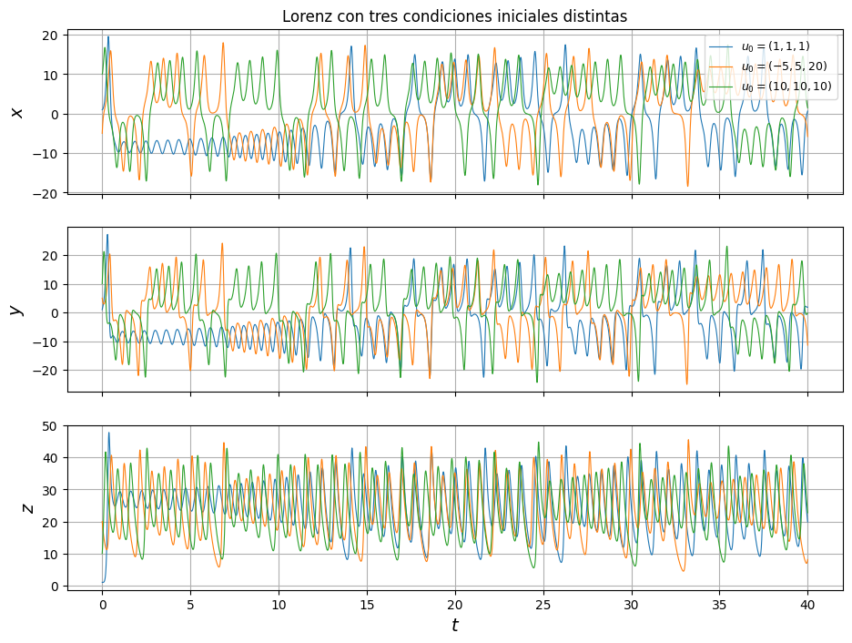
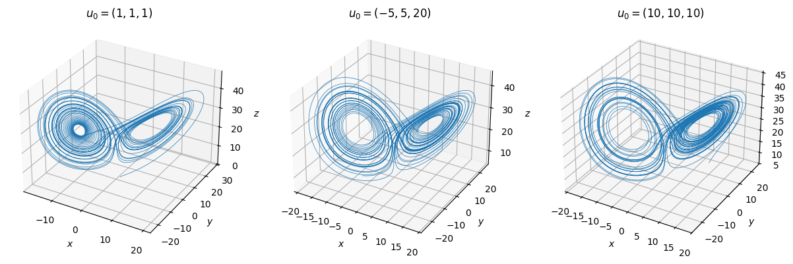
Con las tres condiciones iniciales las series de tiempo son completamente distintas: cambian de signo en momentos diferentes y sin ningún patrón que las relacione entre sí, y tampoco se parecen a nada periódico. Sin embargo, las tres trayectorias tridimensionales tienen la misma forma de mariposa con dos lóbulos, y el rango de valores que visitan es el mismo (más o menos \(x, y \in [-20, 20]\) y \(z\) entre 7 y 48). Es decir, la solución particular depende muchísimo del punto de partida, pero el objeto sobre el que termina viviendo la trayectoria, el atractor, es el mismo. Un detalle que se aprecia en la curva azul (la de \((1, 1, 1)\)) es que después del pico inicial se queda oscilando alrededor de \(x \approx -8.5\) hasta \(t \approx 13.5\) (es la espiral alrededor de uno de los dos puntos fijos no triviales del sistema, que están en \(x = y = \pm\sqrt{\beta(\rho - 1)} \approx \pm 8.49\), \(z = 27\)) y sólo entonces empieza a saltar entre los dos lóbulos. Las otras dos condiciones iniciales empiezan a saltar casi de inmediato.
Actividad 2. Proyecciones y espacio de fases
Para \(u_0 = (1, 1, 1)\) dibujamos las proyecciones de la trayectoria sobre los planos \((x, y)\), \((x, z)\), \((y, z)\) y la trayectoria completa en \((x, y, z)\).
U = soluciones[0]
fig, ejes = plt.subplots(1, 3, figsize=(16, 5))
pares = [(0, 1, "x", "y"), (0, 2, "x", "z"), (1, 2, "y", "z")]
for eje, (i, j, a, b) in zip(ejes, pares):
eje.plot(U[:, i], U[:, j], linewidth=0.5)
eje.set_xlabel(f"${a}$", fontsize=14)
eje.set_ylabel(f"${b}$", fontsize=14)
eje.set_title(f"Proyección en el plano $({a}, {b})$")
eje.grid()
plt.show()
fig = plt.figure(figsize=(9, 8))
ax = fig.add_subplot(projection="3d")
ax.plot(U[:, 0], U[:, 1], U[:, 2], linewidth=0.5)
ax.set_xlabel("$x$", fontsize=12); ax.set_ylabel("$y$", fontsize=12); ax.set_zlabel("$z$", fontsize=12)
ax.set_title(r"Atractor de Lorenz, $u_0 = (1, 1, 1)$, $t \in [0, 40]$")
plt.show()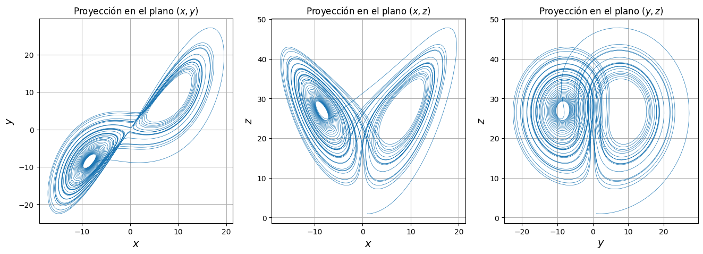
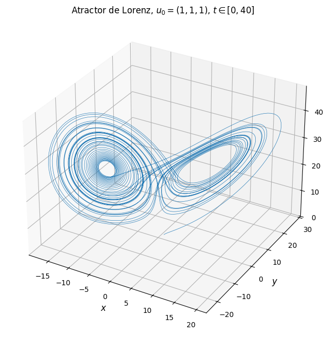
Las tres proyecciones muestran el mismo atractor desde distintos ángulos. En el plano \((x, z)\) aparece la mariposa clásica, con los dos lóbulos centrados en los puntos fijos \((\pm 8.49, 27)\); en \((x, y)\) los dos lóbulos se ven casi alineados sobre la diagonal \(y \approx x\), lo cual tiene sentido porque \(\dot x = \sigma(y - x)\) empuja \(x\) hacia \(y\) muy rápido (\(\sigma = 10\)); y en \((y, z)\) los lóbulos se traslapan y la estructura es menos clara. Se ve también el transitorio inicial, la curva que sale de \((1, 1, 1)\) y sube hasta \(z \approx 48\) antes de caer sobre el atractor, y la primera espiral cerrada alrededor del punto fijo izquierdo. Aunque la trayectoria se cruza a sí misma en cada proyección, en tres dimensiones no lo hace (no puede, por unicidad de las soluciones); los cruces son un artefacto de proyectar.
Actividades 3 y 4. Dos condiciones iniciales muy cercanas
Tomamos \(u_0 = (1, 1, 1)\) y \(\tilde u_0 = (1 + \varepsilon, 1, 1)\) con \(\varepsilon = 10^{-6}\). Mismos parámetros, mismas tolerancias, mismo intervalo \([0, 40]\) y mismos instantes guardados. Además de superponer las soluciones calculo la distancia euclidiana \(\|u(t) - \tilde u(t)\|\) y la grafico en escala logarítmica, que es la forma natural de ver si la separación crece exponencialmente.
eps = 1e-6
u0 = [1.0, 1.0, 1.0]
u0_tilde = [1.0 + eps, 1.0, 1.0]
sol = solve_ivp(f, (0, T), u0, method="RK45", t_eval=tiempos, rtol=1e-8, atol=1e-10)
sol_tilde = solve_ivp(f, (0, T), u0_tilde, method="RK45", t_eval=tiempos, rtol=1e-8, atol=1e-10)
U, U_tilde = sol.y.T, sol_tilde.y.T
fig, ejes = plt.subplots(3, 1, figsize=(11, 8), sharex=True)
for k, var in enumerate(["x", "y", "z"]):
ejes[k].plot(t, U[:, k], "tab:blue", linewidth=0.8, label=r"$u_0 = (1, 1, 1)$")
ejes[k].plot(t, U_tilde[:, k], "tab:red", linewidth=0.8, label=r"$\tilde u_0 = (1 + 10^{-6}, 1, 1)$")
ejes[k].set_ylabel(f"${var}$", fontsize=14)
ejes[k].grid()
ejes[0].legend(loc="upper right", fontsize=9)
ejes[2].set_xlabel(r"$t$", fontsize=14)
ejes[0].set_title(r"Dos soluciones con condiciones iniciales que difieren en $\varepsilon = 10^{-6}$")
plt.show()
fig = plt.figure(figsize=(9, 8))
ax = fig.add_subplot(projection="3d")
ax.plot(U[:, 0], U[:, 1], U[:, 2], "tab:blue", linewidth=0.5, label=r"$u_0$")
ax.plot(U_tilde[:, 0], U_tilde[:, 1], U_tilde[:, 2], "tab:red", linewidth=0.5, label=r"$\tilde u_0$")
ax.set_xlabel("$x$", fontsize=12); ax.set_ylabel("$y$", fontsize=12); ax.set_zlabel("$z$", fontsize=12)
ax.set_title("Las dos trayectorias en el espacio de fases")
ax.legend()
plt.show()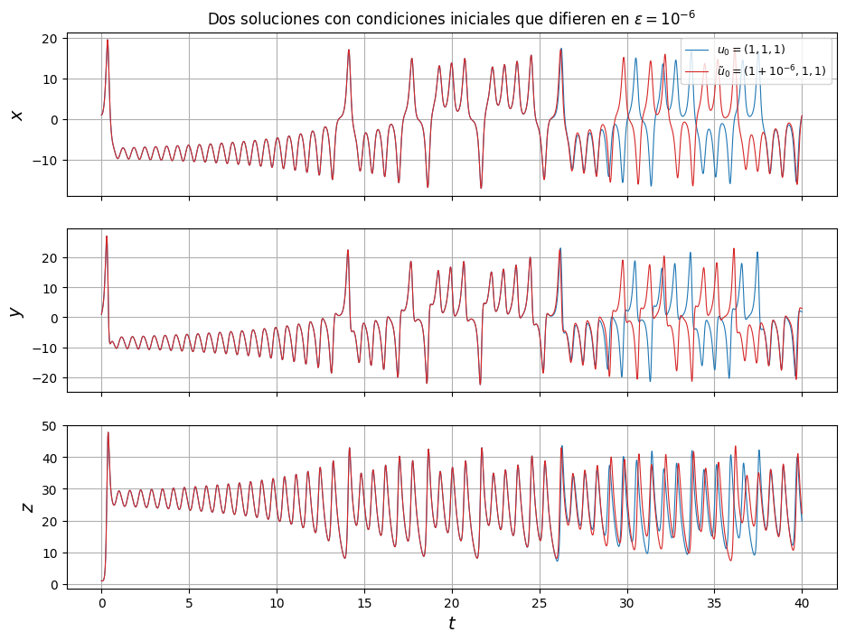
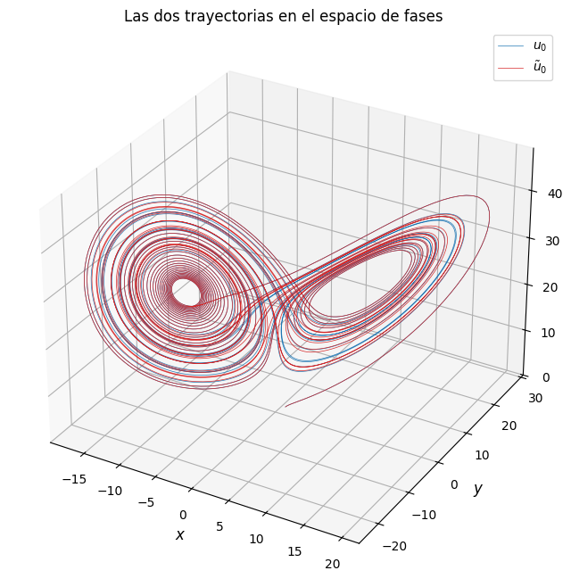
dist = np.linalg.norm(U - U_tilde, axis=1)
plt.figure(figsize=(10, 4))
plt.semilogy(t, dist)
plt.axhline(1, color="gray", linestyle="--", label="distancia = 1")
plt.xlabel(r"$t$", fontsize=14)
plt.ylabel(r"$\|u(t) - \tilde u(t)\|$", fontsize=14)
plt.title("Separación entre las dos soluciones (escala logarítmica)")
plt.legend()
plt.grid()
plt.show()
t_despega = t[np.argmax(dist > 1e-4)]
t_sep = t[np.argmax(dist > 1)]
print("la distancia supera 1e-4 (cien veces la perturbación) por primera vez en t =", round(t_despega, 2))
print("la distancia supera 1 por primera vez en t =", round(t_sep, 2))
print("distancia máxima alcanzada:", round(dist.max(), 2), " (el atractor mide unas 40-50 unidades de lado)")
# pendiente de log(dist) en el tramo donde crece pero todavía es pequeña
mascara = (t > t_despega) & (dist < 1e-1)
pendiente = np.polyfit(t[mascara], np.log(dist[mascara]), 1)[0]
print("pendiente de ln(distancia) contra t en esa zona:", round(pendiente, 3))
print("es decir, la separación se multiplica por e cada", round(1/pendiente, 2), "unidades de tiempo")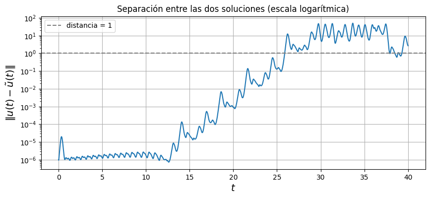
la distancia supera 1e-4 (cien veces la perturbación) por primera vez en t = 14.02
la distancia supera 1 por primera vez en t = 25.88
distancia máxima alcanzada: 50.09 (el atractor mide unas 40-50 unidades de lado)
pendiente de ln(distancia) contra t en esa zona: 0.86
es decir, la separación se multiplica por e cada 1.16 unidades de tiempoActividad 5. Análisis
Las dos soluciones empiezan a una distancia de \(10^{-6}\) y en la gráfica logarítmica la distancia se mantiene prácticamente en ese valor durante los primeros 13 segundos, mientras las dos trayectorias dan vueltas alrededor del mismo punto fijo. Ahí las curvas azul y roja son indistinguibles. A partir de que la trayectoria abandona esa espiral y empieza a saltar de lóbulo (alrededor de \(t = 14\), que es cuando la distancia supera \(10^{-4}\)) la separación crece de manera aproximadamente exponencial: en la escala logarítmica es una línea recta con pendiente 0.86, o sea que la distancia se multiplica por \(e\) cada 1.16 unidades de tiempo, con oscilaciones encima por el movimiento dentro de cada lóbulo. En \(t = 25.88\) la distancia rebasa 1, y poco después las dos soluciones ya no tienen nada que ver: en las gráficas temporales de \(x\), \(y\) y \(z\) se ve que desde \(t \approx 26\) hay momentos en que la curva roja cambia de lóbulo y la azul no, y la distancia llega a valores de hasta 50, que es del tamaño del atractor completo. No permanecen cercanas durante toda la simulación y ninguna precisión práctica lo evitaría: si en vez de \(10^{-6}\) la perturbación fuera \(10^{-12}\) sólo ganaríamos unos \(\ln(10^6)/0.86 \approx 16\) segundos más de acuerdo. Eso es la sensibilidad a las condiciones iniciales, y el coeficiente 0.86 que medimos es una estimación del exponente de Lyapunov máximo del sistema (el valor que se cita para estos parámetros es alrededor de 0.9, así que la estimación con una sola pareja de trayectorias no salió tan mal). A pesar de todo esto, en el espacio de fases las dos trayectorias son indistinguibles a simple vista, las dos dibujan la misma mariposa y visitan los mismos dos lóbulos. La estructura global se conserva; lo que se pierde es la posibilidad de decir en qué lóbulo estará el sistema en un instante dado. Es una combinación que me parece notable: impredecibilidad total en el detalle y regularidad total en la forma.
Reflexión final
Lo que más me quedó de estos experimentos es que las tres representaciones responden preguntas distintas sobre el mismo sistema, y que ninguna sustituye a las otras. El campo de direcciones se puede dibujar sin resolver nada y ya dice hacia dónde se mueve el sistema en cada punto: en Lotka-Volterra bastó con ver los signos de las derivadas en las cuatro regiones para entender que tiene que haber ciclos, y en el péndulo el campo deja ver que \(\theta = 0\) es un centro y \(\theta = \pi\) una silla antes de calcular ninguna trayectoria. El espacio de fases agrega la geometría de las soluciones: las órbitas cerradas de Lotka-Volterra anidadas alrededor del equilibrio, la separatriz del péndulo dividiendo oscilaciones de rotaciones, la mariposa de Lorenz. Y las gráficas temporales son las que tienen la información de cuándo: el desfase de 1.1 entre presas y depredadores, el periodo que crece con la amplitud del péndulo, el momento exacto en que dos soluciones de Lorenz dejan de parecerse. Una curva cerrada en el espacio de fases no dice si el ciclo tarda 2 segundos o 8, y una gráfica temporal de una variable no dice si el movimiento es una oscilación o una rotación hasta que uno se fija en si está acotada.
Varias cosas me sorprendieron. En Lotka-Volterra, que el periodo dependa de la condición inicial aunque los parámetros sean los mismos; uno se acostumbra a los osciladores lineales donde eso no pasa. En el péndulo, la trayectoria que sale de \(\pi - 0.05\): es la misma ecuación que la oscilación pequeña pero la curva de \(\theta\) contra \(t\) parece de otro sistema, y el periodo se triplica. Y en Lorenz, la meseta inicial de la distancia entre las dos soluciones cercanas. Esperaba que se separaran desde el principio, pero mientras las trayectorias dan vueltas alrededor del punto fijo la diferencia se queda en \(10^{-6}\) y sólo despega cuando empiezan a saltar entre lóbulos; el caos no es uniforme en todo el atractor. También me resultó interesante que el número que sale de una pendiente en una gráfica logarítmica, 0.86, esté tan cerca del exponente de Lyapunov que aparece en los libros.
Otra cosa que cambió con estos experimentos es la idea que tenía de “resolver” un sistema dinámico. En ninguno de los tres casos tenemos una fórmula para la solución, y en el de Lorenz ni siquiera podríamos usarla si la tuviéramos, porque cualquier error en la condición inicial se amplifica hasta el tamaño del atractor en unos 25 segundos. Lo que sí se puede decir con confianza es cualitativo: hay ciclos, hay una separatriz, hay un atractor con dos lóbulos. Los tres sistemas tienen reglas sencillas, dos o tres ecuaciones con términos cuadráticos, y sin embargo Lotka-Volterra y el péndulo son completamente regulares mientras que Lorenz es caótico. La diferencia no está en la complejidad de las ecuaciones sino en el tipo de comportamiento que generan, y las herramientas numéricas de esta tarea son justo lo que permite ver esa diferencia sin tener que resolver nada a mano.